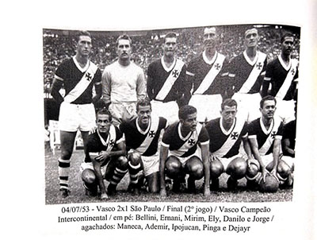
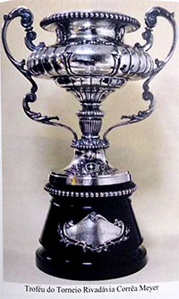

Torneio Octogonal Rivadávia Corrêa Meyer
O Torneio Octogonal Rivadávia Corrêa Meyer foi o sucessor da extinta Copa Rio com novo nome, formato e patrocinadores. Foi organizado pela CBD e teve autorização da FIFA.
Participantes:
Grupo A
- Vasco
- Fluminense
- Botafogo
- Hibernian
Grupo B
- São Paulo
- Corinthians
- Sporting
- Olimpia
Elenco do Vasco
Goleiros
Defensores
- Haroldo
- Jorge
- Hilderalo Bellini
- Dario
- Eli
- Orlando Peçanha
- Duque
- Augusto
- Benito Fantoni
Meias
- Laerte
- Pinga
- Danilo
- Alvinho
- Bira
- Alfredo
- Sabará
Atacantes
- Chico
- Vavá
- Ipojucan
- Djair
- Edmur
- Adésio
- Vadinho
- Ademir Menezes
- Maneca
- Vasconcelos
- Friaça
- Jansen
Partidas
- 07/06/1953 Grp.A Vasco 3-3 Hibernian
- 14/06/1953 Grp.A Vasco 2-1 Fluminense
- 21/06/1953 Grp.A Vasco 2-1 Botafogo
Semifinal
- 24/6/1953 Vasco 4-2 Corinthians
- 28/6/1953 Corinthians 1-3 Vasco
Final
- 01/07/1953 São Paulo 0-1 Vasco
- 04/07/1953 Vasco 2-1 São Paulo

